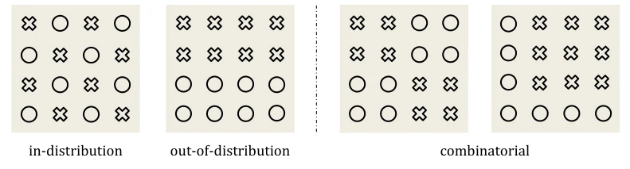
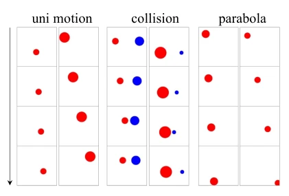
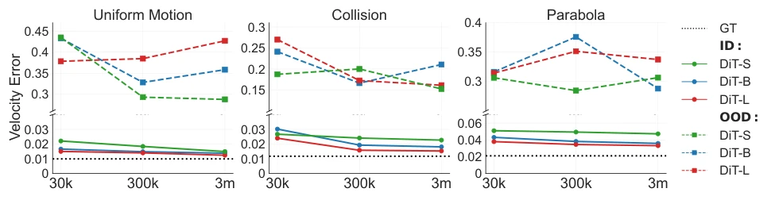
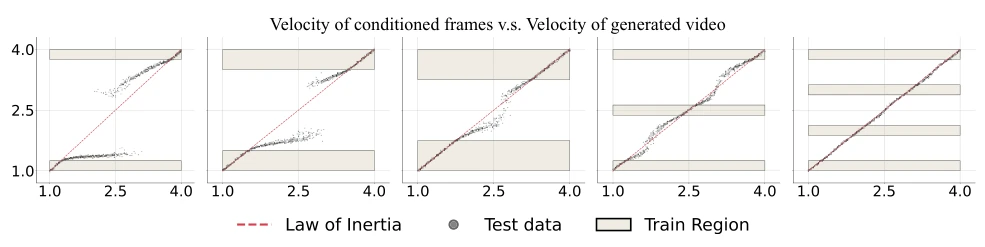
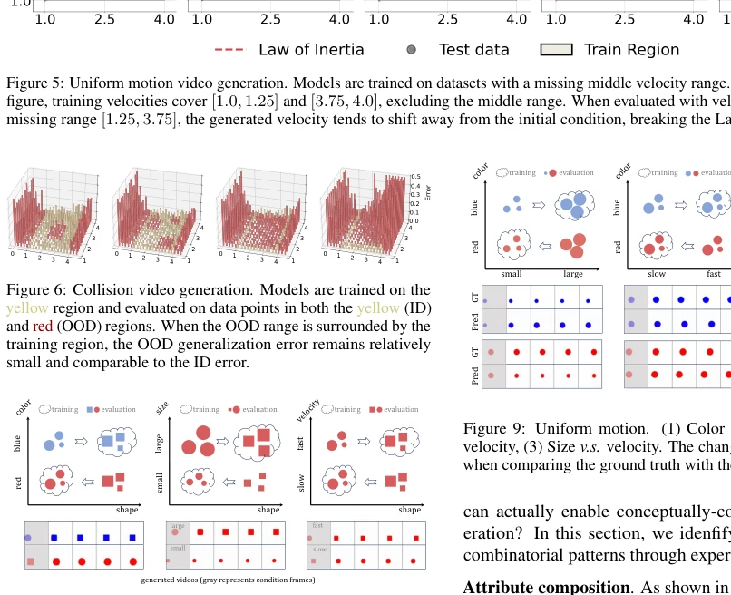
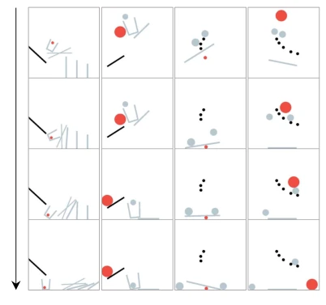
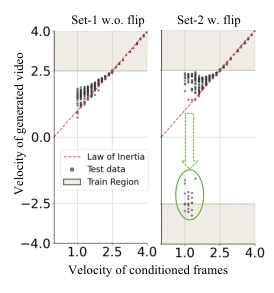
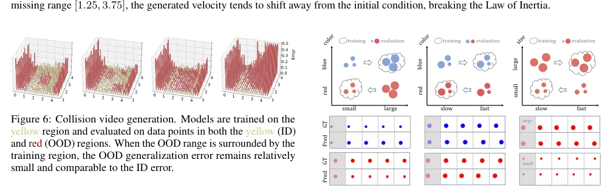
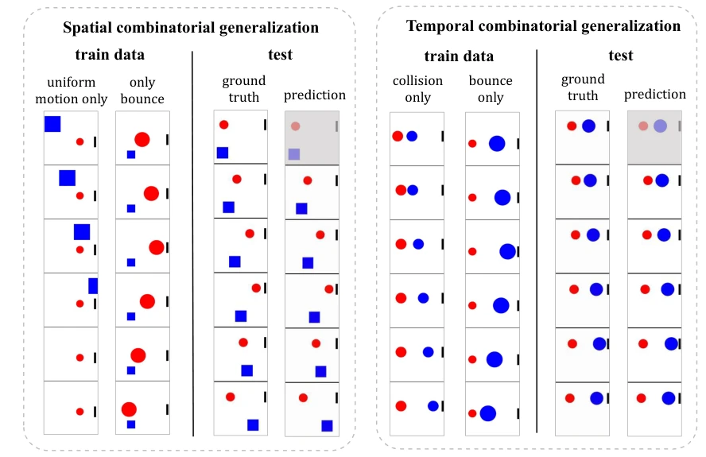
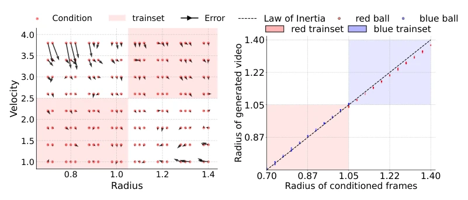

How Far is Video Generation from World Model: A Physical Law Perspective
Bingyi Kang, Yang Yue, Rui Lu, Zhijie Lin, Yang Zhao, Kaixin Wang abspdf
论文点评Review
这篇论文给盲目崇拜 Scaling 的 Embodied AI 圈泼了盆冷水。虽然视频生成模型在训练分布内表现完美，但一旦遇到未见过的物理场景（OOD），模型就原形毕露，根本不懂牛顿定律，只是死记硬背训练集里的“案例”。更有趣的是，模型在匹配特征时，颜色比形状重要，速度比大小重要，这解释了为什么生成视频里物体经常变形。结论很扎心：光靠堆数据和参数，视频生成模型离真正的世界模型还差着物理直觉呢。它揭示了当前模型本质上是“案例匹配器”而非“物理学家”，这对依赖视频生成构建世界模型的研究者是个警示。
This paper delivers a sobering reality check to the Embodied AI community that blindly worships Scaling. Although video generation models perform perfectly within the training distribution, once encountering unseen physical scenarios (OOD), the model reveals its true limitations, fundamentally not understanding Newton's laws, merely rote memorizing "cases" in the training set. More interestingly, when matching features, color is more important than shape, and speed is more important than size, which explains why objects in generated videos often deform. The conclusion is stinging: relying solely on stacking data and parameters, video generation models are still far from true world models, lacking physical intuition. It reveals that current models are essentially "case matchers" rather than "physicists", which serves as a warning for researchers relying on video generation to build world models.
研究动机Motivation
当前视频生成模型被视为构建世界模型（World Model）的潜力股，被寄予厚望用于机器人和自动驾驶（Yang et al., 2023; Hu et al., 2023）。然而，一个核心问题悬而未决：模型是否真的从视觉数据中“发现”了物理规律，还是仅仅在记忆数据？现有评估缺乏对物理一致性的系统性验证，难以区分模型是理解了规则还是过拟合了分布。本文旨在通过严格的分布外（OOD）和组合泛化测试，量化视频生成模型在物理推理上的真实能力，填补从“生成逼真视频”到“理解物理世界”之间的评估鸿沟。
Current video generation models are regarded as promising candidates for building World Models, with high expectations for use in robotics and autonomous driving (Yang et al., 2023; Hu et al., 2023). However, a core question remains unresolved: whether the models truly "discover" physical laws from visual data, or merely memorize data? Existing evaluations lack systematic verification of physical consistency, making it difficult to distinguish whether models understand rules or overfit distributions. This paper aims to quantify the true capabilities of video generation models in physical reasoning through rigorous out-of-distribution (OOD) and compositional generalization tests, bridging the evaluation gap between "generating realistic videos" and "understanding the physical world".

Figure 1: Categorization of generalization patterns.# denotes training data. × denotes testing data.
The study adopts a closed loop of "Simulation Generation - Model Training - Quantitative Evaluation". First, a 2D physics simulation environment (Box2D/PHYRE) is constructed to generate video datasets strictly controlled by classical mechanics laws (constant velocity, elastic collision, parabola), ensuring physical ground truth is computable. The model architecture is based on DiT (Diffusion Transformer) combined with VAE to compress spatiotemporal information, using input of previous frames as conditions to predict subsequent frames. Evaluation is divided into three categories: in-distribution (ID) generalization measures speed error, out-of-distribution (OOD) generalization measures extrapolation capability, and compositional generalization measures physical rationality of new object combinations. Specifically, a pixel parsing tool was developed to extract object positions and velocities in generated videos, calculating errors against simulation ground truth, combined with human evaluation of "anomaly rates" to quantify the degree of physical violation. Additionally, the dependency weights of the model on different attributes (color, shape, speed) are analyzed via the control variable method to reveal its internal generalization mechanism.

Figure 2: Downsampled video visualization. The arrow indicates the progression of time.
Experiments cover three physics scenarios (constant velocity, collision, parabola) and compositional scenarios. Under ID settings, increasing data volume (30K to 3M) and model size (22M to 310M) significantly reduces speed error. However, under OOD settings, errors do not decrease with Scaling, even fluctuating randomly, proving models cannot extrapolate physical laws. In compositional generalization experiments, increased data coverage reduced the anomaly rate from 67% to 10%. In-depth analysis reveals the model tends towards "case-based" generalization rather than rule abstraction, with feature priority as Color > Size > Velocity > Shape. This indicates the model is more imitating similar samples in the training set rather than learning universal physical laws.

Figure 3: The error in the velocity of balls between the ground truth state in the simulator and the values parsed from the generated video by the diffusion model, given the first 3 frames.

Figure 5: Uniform motion video generation. Models are trained on datasets with a missing middle velocity range. For example, in the first figure, training velocities cover [1.0, 1.25] and [3.75, 4.0], excluding the middle range. When evaluated with velocity condition from the missing range [1.25, 3.75], the generated velocity tends to shift away from the initial condition, breaking the Law of Inertia.

Figure 8: Uniform motion. (1) Color v.s. shape, (2) Size v.s. shape, (3) Velocity v.s. shape. The arrow ⇒signifies that the generated videos shift from their specified conditions to resemble similar training cases. For example, in the first figure, the model is trained on videos of blue balls and red squares. When conditioned with a blue ball, as shown in the bottom, it transforms into a blue square, i.e., mimicking the training case by color.
其他图片Other Figures

Figure 4: Downsampled videos. The black objects are fixed and others are dynamic.

Figure 7: The example of uniform motion illustrating memorization.

Figure 9: Uniform motion. (1) Color v.s. size, (2) Color v.s. velocity, (3) Size v.s. velocity. The change in velocity is evident when comparing the ground truth with the predicted videos.

Figure 11: Spatial and temporal combinatorial generalization. The two subsets of the training set contain disjoint physical events. However, the trained model can combine these two types of events across spatial and temporal dimensions.

Figure 12: Prioritization experiments with CogVideo’s VAE. (1) Velocity v.s. size. (2) Color v.s. velocity.